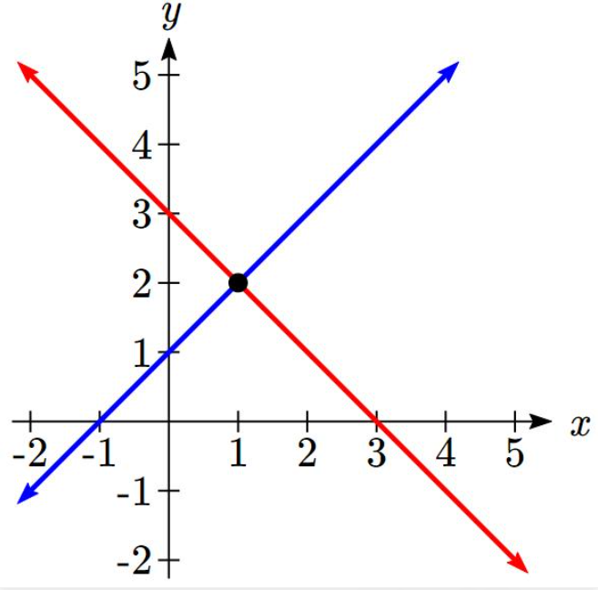
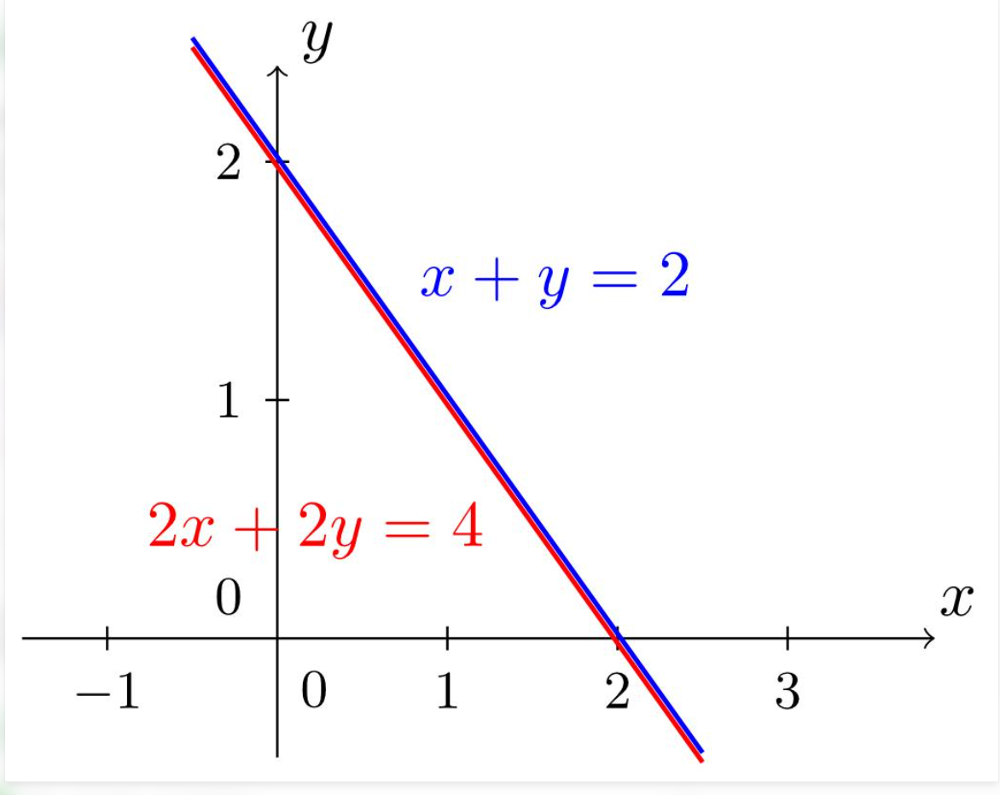
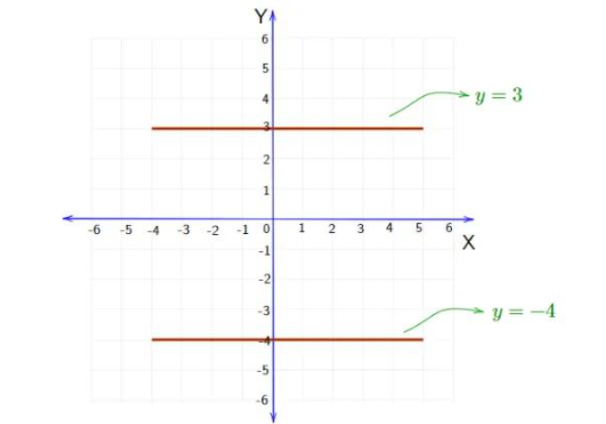

حل أنظمة المعادلات الخطية خطوة بخطوة
Type in the coefficients of your system, pick Gaussian or Gauss-Jordan elimination, and watch the matrix being reduced one row operation at a time until the final solution appears.
Ri → kRi
Ri ↔ Rj
Ri → Ri + kRj
System of equations that has at least one solution.
System of equations that has no solution.



Definition: A system in which all constants are zero. (كل الثوابت قيمتها صفر، أي أن عمود B كله أصفار)
ملاحظات إضافية: النظام المتجانس (Homogeneous) دائماً متسق (Consistent) لأن الحل الصفري (Trivial Solution) يحققه دائماً.
(مثال 9 في قسم الأمثلة).
القاعدة المهمة: كل Homogeneous System هو Consistent، لكن مش كل Consistent System هو Homogeneous.
| 0 | 1 | 0 |
| 1 | 2 | -1 |
| 0 | 0 | 0 |
| 0 | 1 | 0 |
| 0 | 0 | 0 |
| 0 | 0 | 0 |
| 0 | 1 | 0 |
| 0 | 0 | 1 |
| 0 | 0 | 0 |
| 1 | 0 | 1 |
| 0 | 1 | 0 |
| 0 | 0 | 1 |
| 0 | 0 |
| 0 | 0 |
| 1 | 0 | 0 |
| 0 | 1 | 0 |
| 0 | 0 | 0 |
| 0 | 0 |
| 0 | 0 |
اضغط على «جرّب المثال» ليتم إدخال المعاملات وحلها تلقائياً، ثم قارن نتيجة البرنامج بالحل المكتوب في المثال.
الطرق دي (Gaussian و Gauss-Jordan) من أهم الخوارزميات اللي بتتستخدم في البرمجة كل يوم، حتى لو مش شايفها مباشرة. دي أشهر استخداماتها:
أي برنامج محتاج يحل عدة معادلات مع بعض بيستخدم نفس الفكرة. مكتبات زي NumPy و MATLAB بتحل الأنظمة باستخدام LU Decomposition، وهي صورة منظمة من Gaussian Elimination.
بنكتب المصفوفة جنب مصفوفة الوحدة على الشكل [ A | I ] ونطبق Gauss-Jordan، فتتحول لـ [ I | A⁻¹ ] ونطلع المعكوس مباشرة.
عدد الـ leading في الـ Row Echelon Form هو رتبة المصفوفة. بتتستخدم لمعرفة هل النظام له حل، وهل الأعمدة (Features) في البيانات معتمدة على بعضها.
في Linear Regression بنحل المعادلات الطبيعية (XᵀX)β = Xᵀy للحصول على أفضل خط يمر بالبيانات، وده نظام خطي بيتحل بنفس الطرق.
معكوس مصفوفات التحويل (Transformations) بيتستخدم لتحويل الإحداثيات بين الفضاءات، زي من إحداثيات الشاشة لإحداثيات العالم داخل اللعبة.
قوانين كيرشوف في الدوائر الكهربائية، وتحليل الشبكات وحركة المرور، كلها بتتحول لنظام معادلات خطية بيتحل بالبرنامج.
بتتستخدم نسخة من Gaussian Elimination على أعداد 0 و 1 (Field GF(2)) في فك الشفرات وتصحيح الأخطاء في أنظمة الاتصالات.
خوارزمية Simplex المستخدمة في مسائل التحسين (زي توزيع الموارد وتقليل التكلفة وجدولة المهام) بتعتمد على نفس عملية الـ Pivot بتاعة Gauss-Jordan في كل خطوة لتحديث الجدول والوصول لأفضل حل.